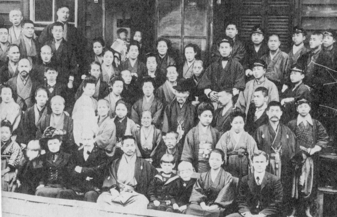
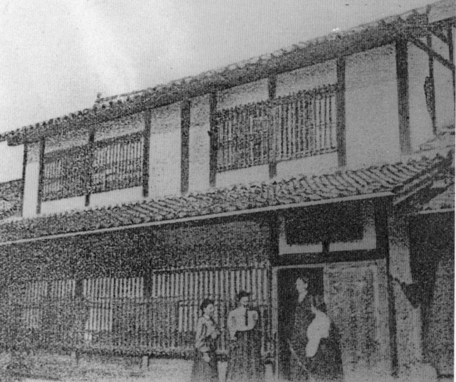
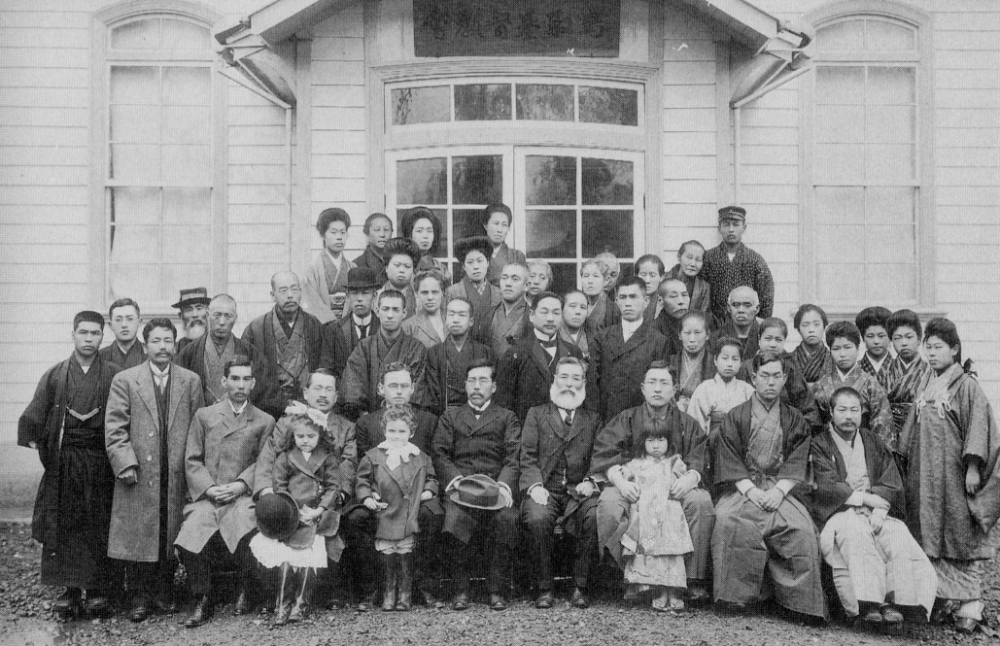
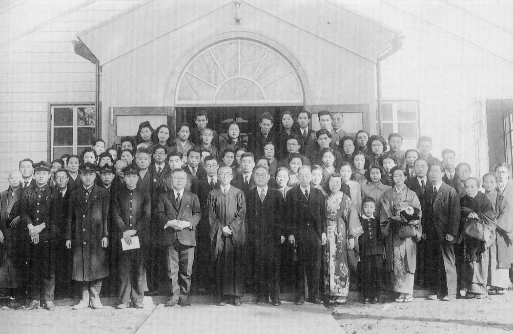
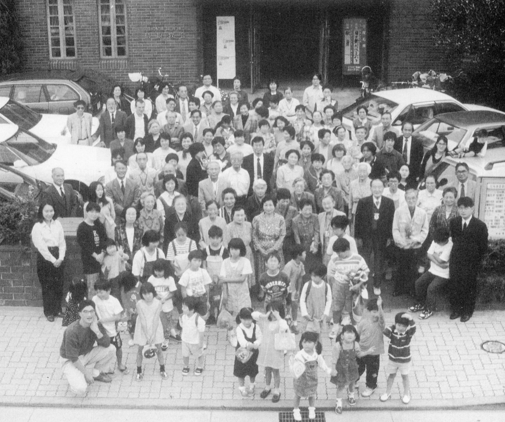
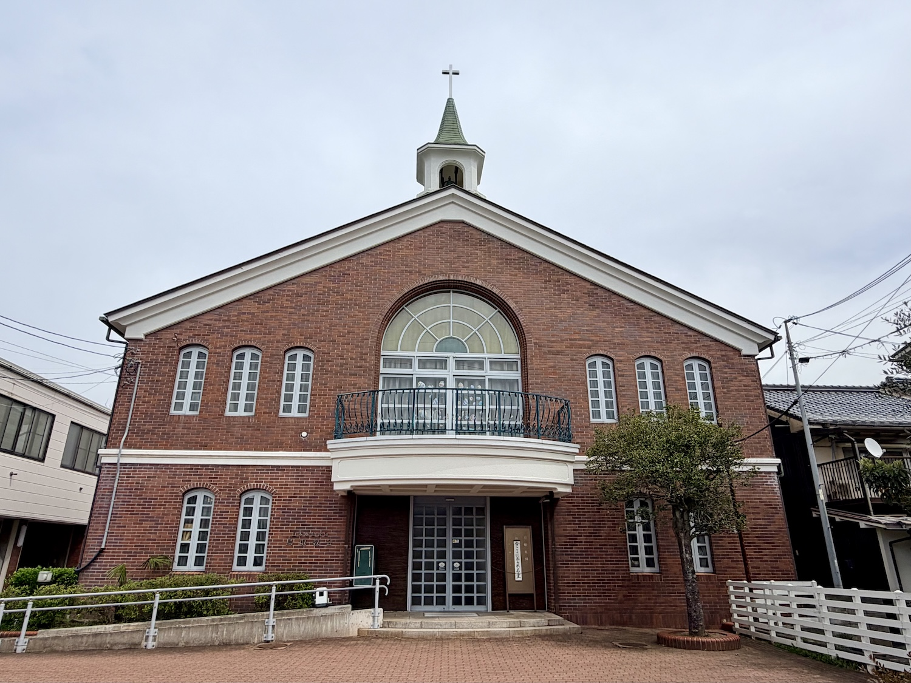

明治初期
旧組合教会の流れを受け継ぐ教会
日本基督教団鳥取教会は、鳥取県鳥取市西町にある教会で、旧組合教会の流れを受け継ぐ教会です。その歩みは、明治初期のキリスト教伝道にさかのぼります。
明治という新しい時代の中で、鳥取の地にもキリスト教の福音が伝えられ、求道者たちの集まり、説教所、教育の働きが少しずつ形づくられていきました。
明治初期の伝道に始まった鳥取教会の歩みを、信仰、教育、地域との関わりの中でたどります。受け継がれてきた祈りと交わりは、今日の教会の土台となっています。

鳥取教会の歴史は、明治初期にこの地で始まったキリスト教伝道にさかのぼります。旧組合教会の流れを受け継ぎながら、鳥取の街に根ざし、福音を伝え、教育と地域への奉仕を大切にして歩んできました。
加藤勇次郎、吉村秀蔵をはじめ、金森通倫、綱島佳一、元良勇次、上代知新、J・H・デフォレスト、O・ケリー、E・タルカット、ジョージ・ローランドなど、多くの伝道者と宣教師たちの働きによって、鳥取におけるキリスト教の歩みは形づくられていきました。

日本基督教団鳥取教会は、鳥取県鳥取市西町にある教会で、旧組合教会の流れを受け継ぐ教会です。その歩みは、明治初期のキリスト教伝道にさかのぼります。
明治という新しい時代の中で、鳥取の地にもキリスト教の福音が伝えられ、求道者たちの集まり、説教所、教育の働きが少しずつ形づくられていきました。
明治12年（1879年）、熊本バンドの一人であり、同志社英学校で学んでいた加藤勇次郎が、鳥取出身の吉村秀蔵の招きによって鳥取を訪れました。加藤はこの地で、40日間にわたる鳥取最初の本格的な伝道活動を行いました。
この働きは、鳥取におけるキリスト教伝道の大切な出発点となりました。
この時期、吉村秀蔵を中心に、綱島佳一、上代知新、J・H・デフォレストなど、多くの伝道者やアメリカン・ボードの宣教師たちが鳥取での宣教を支えました。こうした働きを通して、鳥取教会の基礎が形づくられていきました。
明治13年（1880年）には、J・H・デフォレスト、上代知新が来鳥し、基督教演説会が開催されました。明治14年（1881年）には、綱島佳一がアメリカン・ボード、すなわち米国伝道会社より派遣されて来鳥します。また、求道者団体「友愛会」が結成され、この友愛会は後の鳥取教会の萌芽となりました。
鳥取における信仰共同体は、個人の働きだけではなく、多くの人々の出会いと祈りによって少しずつ形を整えていきました。
明治18年（1885年）には、O・ケリー、金森通倫が来鳥し、基督教演説会が開催されます。また、上代知新がアメリカン・ボードより専任伝道者として派遣され、同年、元魚町講義所が設立され、E・タルカット宣教師も来鳥しました。
これにより、鳥取における宣教活動は、求道者の集まりから、より継続的な説教と集会の場を持つ段階へと進んでいきました。明治19年（1886年）にも基督教演説会が開催され、演説会、講義所、求道者の集まりを通して、キリスト教信仰に触れる人々が徐々に増え、後の鳥取教会へとつながる信仰共同体の土台がさらに固められていきました。
E・タルカット宣教師は鳥取に長期滞在し、地域の教育にも大きな働きを残しました。明治20年（1887年）には、鳥取教会を支えとして鳥取英和女学校が設立されます。
財政的な困難により15年で閉校しましたが、鳥取におけるキリスト教教育の大切な足跡となりました。鳥取教会の歴史は、初めから礼拝だけでなく、教育と地域への奉仕と深く結びついていました。
明治21年（1888年）には、アメリカン・ボードの宣教師ジョージ・ローランドが鳥取に赴任しました。その翌年、明治22年（1889年）3月24日、ローランド宣教師のもとで、友愛会、青年会、英和女学校の生徒たちを中心に信仰復興の出来事が起こりました。
このリバイバルによって多くの人々が信仰へと導かれ、教会堂は人々で満たされるようになりました。鳥取の地に福音が根を張り、信仰の群れが力強く成長していった時代でした。
明治23年（1890年）、これまでの伝道と集会の歩みを土台として、鳥取教会は教会として独立・創立しました。明治初期から続いてきた福音宣教の実りが、この地に根ざす教会共同体として形づくられていきました。
鳥取教会の創立は、単なる組織の始まりではなく、鳥取の地に礼拝を守り、祈りを重ね、地域と共に歩む教会が生まれた出来事でした。

鳥取教会の歩みは、地域の教育とも深く結びついています。
明治31年（1898年）、アメリカン・ボード派遣の宣教師S・C・バートレット夫妻によって、鳥取市西町の第2宣教師館内に Play school、すなわち遊戯学校が設けられました。これが、後に愛真幼稚園へとつながる幼児教育の始まりとされています。
明治39年（1906年）4月には、宣教師H・J・ベネット夫妻によって「鳥取幼稚園」が創設されました。これが愛真幼稚園の創立の年とされています。大正11年（1922年）には「愛真幼稚園」と改称され、現在地へ移転しました。
この働きは、鳥取教会が早くから子どもたちの成長と地域の教育を大切にしてきたことを示す、大切な歩みです。
明治から大正へと時代が移る中で、鳥取教会の働きはさらに広がっていきました。教会には、礼拝を中心とした信仰の交わりだけでなく、青年の学び、女性たちの働き、教育への関心、地域に仕える活動が育まれていきました。
こうした歩みの中から、内田正、尾崎信太郎、西尾幸太郎、森脇竹蔵をはじめ、地域と教会に仕える多くの人材が生まれました。また、大正5年（1916年）には、アメリカン・ボードの婦人宣教師エステラ・コーが鳥取に赴任し、教会の活動はさらに広がっていきました。
熊本バンドにならって「鳥取バンド」と呼ばれる信仰の群れも形成され、鳥取教会は、伝道、教育、幼児教育、社会への奉仕を通して、鳥取の街に深く関わる教会として歩みを進めていきました。
大正期から昭和初期にかけて、鳥取教会は地域に根ざす教会として歩みを続けました。礼拝、教会学校、青年会、婦人会などの働きを通して、世代を越えた信仰の交わりが形づくられていきました。
この時期の教会の歩みは、単に日曜日の礼拝にとどまるものではありませんでした。子どもたちの教育、青年たちの成長、女性たちの奉仕、地域社会との関わりを通して、教会は鳥取の街の中で祈りと学びの場となっていきました。
また、愛真幼稚園の働きも、地域の子どもたちの成長を支える大切な働きとして継続されました。鳥取教会の歴史において、教育と信仰は互いに切り離せないものとして受け継がれていきました。
昭和5年（1930年）には、南窓館が竣工し、愛真幼稚園の園舎として用いられるようになりました。南窓館は、幼稚園舎としてだけでなく、鳥取における文化センター、宣教センターとしての役割も担いました。
昭和9年（1934年）には、愛真幼稚園の経営がアメリカン・ボード日本ミッションから鳥取教会へと移管されました。これにより、鳥取教会と愛真幼稚園の結びつきはさらに明確なものとなりました。
教会は、礼拝を守る共同体であると同時に、子どもたちの成長を祈り、教育を通して地域に仕える共同体として歩み続けました。この時期、鳥取教会の「祈り」と「教育」は、地域社会の中で具体的な形をもって表されていきました。

昭和の時代、社会は大きく変化し、やがて戦争の時代へと向かっていきました。教会を取り巻く状況も厳しさを増し、信仰を守ること、礼拝を続けること、教育の働きを担うことは、決して容易ではありませんでした。
そのような時代の中でも、鳥取教会は祈りを絶やさず、礼拝を守り、与えられた場所で地域に仕える歩みを続けました。戦時下の歩みは、教会にとって痛みと忍耐の時であると同時に、信仰共同体として何を大切にするのかを問われる時でもありました。
鳥取教会の歴史には、華やかな成長の時だけでなく、困難の中で礼拝を守り続けた人々の祈りも刻まれています。
戦後、鳥取教会は新しい時代の中で再び歩みを整えていきました。礼拝を中心に、教会学校、青年や婦人の集まり、祈りと学びの場が回復され、信仰共同体としての歩みが再び形づくられていきました。
また、愛真幼稚園の働きも、明治以来の幼児教育の歩みを受け継ぎながら続けられました。教会と幼稚園は、それぞれの働きを担いながらも、子どもたちのいのちと成長を大切にする祈りを共有し、地域に仕える歩みを続けました。
戦後の復興は、建物や制度を整えることだけではありませんでした。礼拝を守り、子どもたちを育て、地域の人々と共に歩むという、教会の原点を改めて確かめる時でもありました。
1950年、鳥取教会は創立60周年を迎えました。明治の伝道から始まった歩みを振り返り、先人たちの祈りと奉仕に感謝する時となりました。
1960年代には、教会史の整理や記念事業が進められ、鳥取教会の歩みを次の世代へ伝える努力が重ねられていきました。長い歴史を持つ教会として、過去を記念するだけでなく、その歴史から何を受け継ぎ、これから何を大切にして歩むのかが問われていきました。
この時期、鳥取教会は、礼拝、教育、交わり、地域への奉仕を軸にしながら、戦後社会の変化の中で教会のあり方を模索していきました。
1970年代から1980年代にかけて、鳥取教会は地域社会の変化の中で歩み続けました。高度経済成長を経た社会の中で、人々の暮らしや家族のあり方、地域のつながりも大きく変わっていきました。
そのような中で、鳥取教会は礼拝を中心に、教会学校、各会の活動、祈りと交わりを大切にしながら、地域に開かれた教会としての歩みを続けました。愛真幼稚園との関わりも、地域の子どもたちと家庭を支える大切な働きとして受け継がれていきました。
教会は、時代の変化の中にあっても、人が祈り、支え合い、共に生きる場所であり続けることを目指して歩みました。

1990年、鳥取教会は創立100周年を迎えました。明治の伝道に始まった歩みを振り返り、先人たちの信仰と奉仕に感謝しながら、これからの宣教の歩みを新たにしました。
創立100周年は、鳥取教会が一世紀にわたって礼拝を守り、地域と共に歩んできたことを覚える大切な節目でした。同時に、それは過去を記念するだけではなく、次の時代に向けて、教会がどのように福音を証しし、地域に仕えていくのかを考える時でもありました。
この節目を通して、鳥取教会は、祈り、教育、交わり、地域への奉仕という歩みを改めて確認しました。
2000年代に入り、社会はさらに大きく変化していきました。少子高齢化、地域社会のつながりの変化、教会に集う人々の生活環境の変化など、教会を取り巻く状況も新しい課題に直面するようになりました。
鳥取教会は、そのような時代の中で、礼拝を守り続けるとともに、教会学校、聖書の学び、祈りの集い、地域との関わりを大切にして歩みました。また、愛真幼稚園との関わりを通して、子どもたちと家庭を支える働きも継続されました。
この時期の歩みは、変化する社会の中で、教会がどのように開かれた共同体であり続けるのかを模索する歩みでもありました。
2010年、鳥取教会は創立120周年を迎えました。長い歴史の中で受け継がれてきた礼拝、祈り、交わり、教育の働きを覚え、教会の歩みを感謝する時となりました。
創立120周年は、鳥取教会が地域と共に歩み続けてきた歴史を確認するとともに、これからの教会の姿を考える節目でもありました。教会は、これまでの歩みを大切にしながら、少子高齢化や地域社会の変化の中で、次の世代へ信仰と祈りをどのように受け継いでいくのかを問い続けました。
この問いは、今日の鳥取教会の歩みにもつながっています。
2020年、鳥取教会は創立130周年を迎えました。記念礼拝と記念感謝会が行われ、130年にわたる教会の歩みを振り返るとともに、資料や遺産物の整理、記念事業なども進められました。
同じ年、新型コロナウイルス感染症の拡大により、礼拝や集会のあり方は大きな変化を迫られました。人と人とが集まることが難しくなる中で、教会は礼拝をどのように守るのか、交わりをどのように保つのか、地域とどのようにつながり続けるのかを考えることになりました。
創立130周年は、過去への感謝と同時に、変化する時代の中で教会がどのように歩むのかを考える大切な節目となりました。

2020年代前半、鳥取教会は牧師不在の時期を経験しました。この時期、教会は代務牧師や教区の支えを受けながら、役員と信徒が祈りを合わせ、礼拝と教会の働きを守り続けました。
牧師不在の時期は、教会にとって決して容易な歩みではありませんでした。しかし同時に、それは鳥取教会が牧師だけによって成り立つのではなく、信徒一人ひとりの祈りと奉仕によって支えられていることを改めて確認する時でもありました。
礼拝を守ること、教会を維持すること、互いに支え合うこと。その一つひとつの働きの中に、鳥取教会の信仰共同体としての力が示されました。
約2年間の備えの時を経て、2026年4月より、鳥取教会は新しい牧師たちを迎え、新しい歩みを始めました。
明治以来、鳥取教会が大切にしてきた祈り、教育、幼児教育、地域への奉仕の歩みは、今も受け継がれています。愛真幼稚園との関わりもまた、教会が地域の子どもたちのいのちと成長を祈り続けてきた歴史の大切な一部です。
これからも鳥取教会は、鳥取の街と共に歩み、神の愛と平和を証しする教会として歩み続けます。
鳥取教会は、明治以来、地域に根ざしながら福音を伝え、教育、祈り、交わりを大切にして歩んできました。その歴史は、一人の牧師や宣教師だけによって築かれたものではありません。伝道者、宣教師、牧師、信徒、子どもたち、そして地域の人々との出会いと祈りによって形づくられてきた歩みです。
鳥取教会は、これからもこの地にあって、神の愛と平和を証しし、すべての人が尊ばれる交わりを目指して歩み続けます。